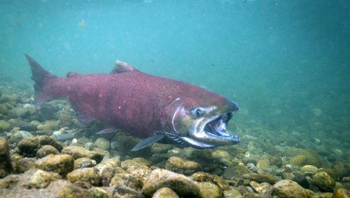
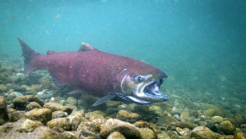

What are Coho and Chinook Salmon?
Coho and Chinook salmon are anadromous fish, meaning they begin life in fresh water, make their ways out to the ocean to feed and grow. When mature enough, they complete the life cycle by swimming up stream to spawn. This makes them vulnerable to a variety of threats.
There is a decline in Salmon populations, as recently as April 8th, 2023 the West Coast Salmon Fishing Season was declared shut down as the populations face dwindling numbers.
The salmon need time to rebound and the government needs to allocate funding for the cause, and see to it the funding is properly used
 

What are some threats faced by salmon?
Some of the threats they face may seem more obvious such as blocked access by dams, water quality being effected by mining activity, and disease spreading from within poorly managed open ocean salmon hatcheries (the first variable on the dropdown).
The second variable looks at the percent of mines created before salmon were declared endangered under the California Endangered Species act in 1989.
Percentages of rivers with wild and scenic designation is the fourth variable. Could this be a enactment to help salmon populations?
Additional threats
The third variable displays the percent of dams built during the dam era, there is enough reason to plead why hydropower should not be seen as a reliable/feasible source of hydroelectricy or as a source of water stroage in an increasingly hotter climate.
Which leads us to our final variables available which include anticipated rainfall differences for select months as well as average rainfalls for the same months. Less rainfall is leading to more drought and drier, warmer streams making it difficult for spawning as salmon attempt to swim upstream.